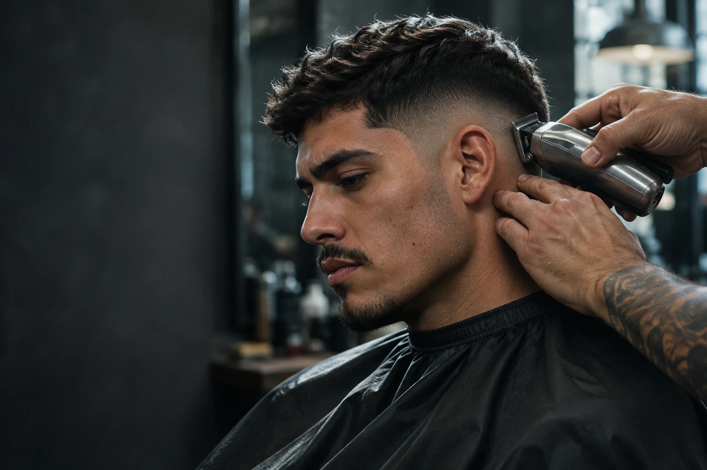
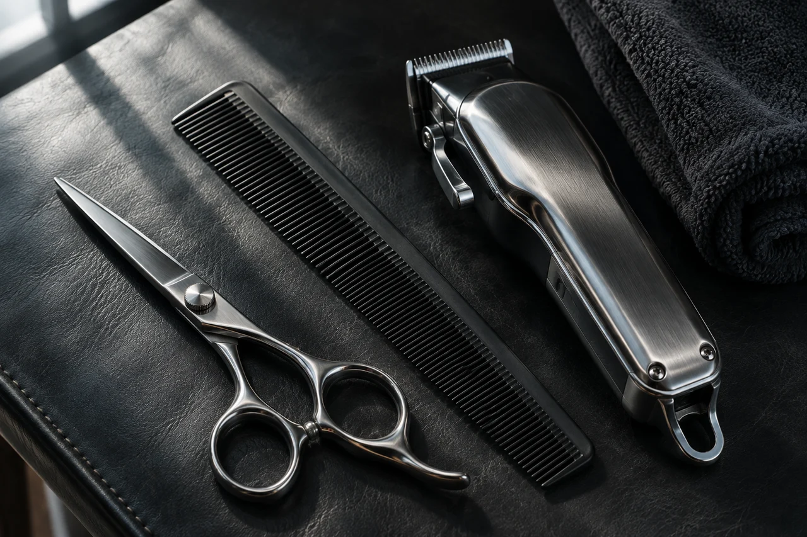
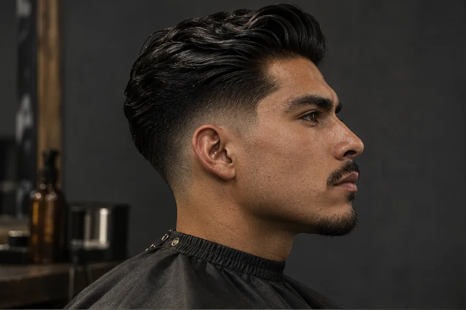

Corte de caballero
Clásico, texturizado o con degradado. Elige el acabado que va contigo.

Estética y barbería · Guadalajara
Cortes, barba y peinados con atención al detalle.
Encuentra tu estilo en Joss Barber.
Servicios
Cortes, barba, peinados y manicura.
Precios en pesos mexicanos.
Clásico, texturizado o con degradado. Elige el acabado que va contigo.
Líneas definidas, perfilado y forma para resaltar el contorno de tu rostro.
Movimiento, textura y acabado para el día a día o una ocasión especial.
Limado, cuidado de cutícula y acabado para darle forma a tus uñas.

El estudio
Joss Barber está en Pensador Mexicano, en Guadalajara. En una misma visita puedes consultar por un corte de caballero, darle forma a tu barba o elegir un peinado y una manicura.
¿Traes una idea en el celular? Muéstranos qué te gustó de ese corte: el largo de arriba, el contorno de la nuca o la forma en que cae el fleco.
Ver ubicación y horariosGuía de estilo

El cabello queda más corto en los lados y conserva largo arriba para peinarlo hacia atrás o de lado.
Cómo pedirlo
“Quiero un degradado bajo y suficiente largo arriba para marcar la raya.”
Galería
Encuentra una idea para tu próxima visita.
Preguntas frecuentes
Busca una donde se vean los laterales y otra del largo que te gusta arriba. Una foto con una textura parecida a la tuya ayuda a explicar el acabado que buscas.
Señala hasta dónde quieres que llegue el cabello una vez seco. Aclara si buscas recortar puntas, descargar volumen o limpiar solo los contornos.
Indica qué servicios te interesan, por ejemplo corte y manicura, y qué día te gustaría venir. Puedes incluir ambos en el mensaje de consulta para preguntar por disponibilidad y tiempo total.
En la sección de contacto encontrarás el horario del estudio y el enlace para abrir la ruta hasta Pensador Mexicano 1496 en Google Maps.
Ver datos de la visitaContacto
Consulta disponibilidad y cuéntanos qué estilo tienes en mente.